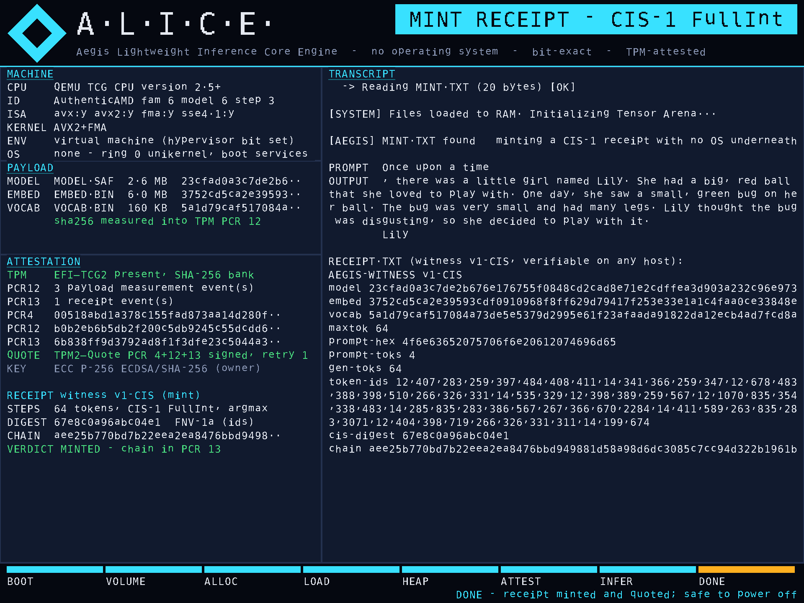
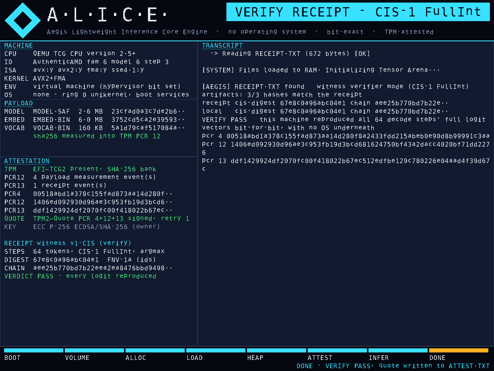
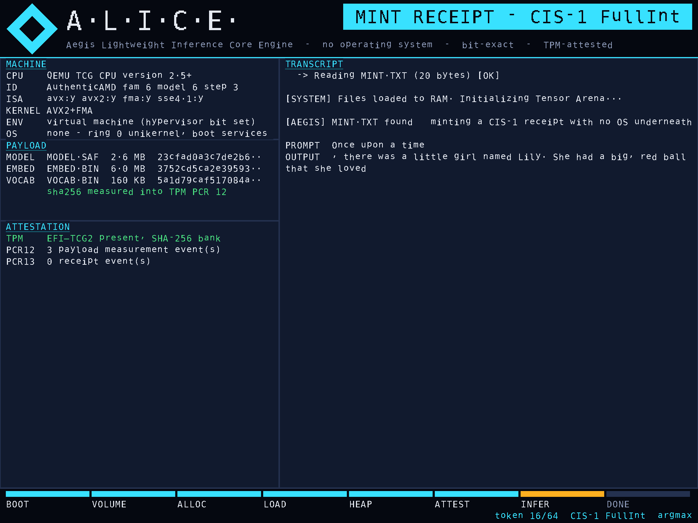
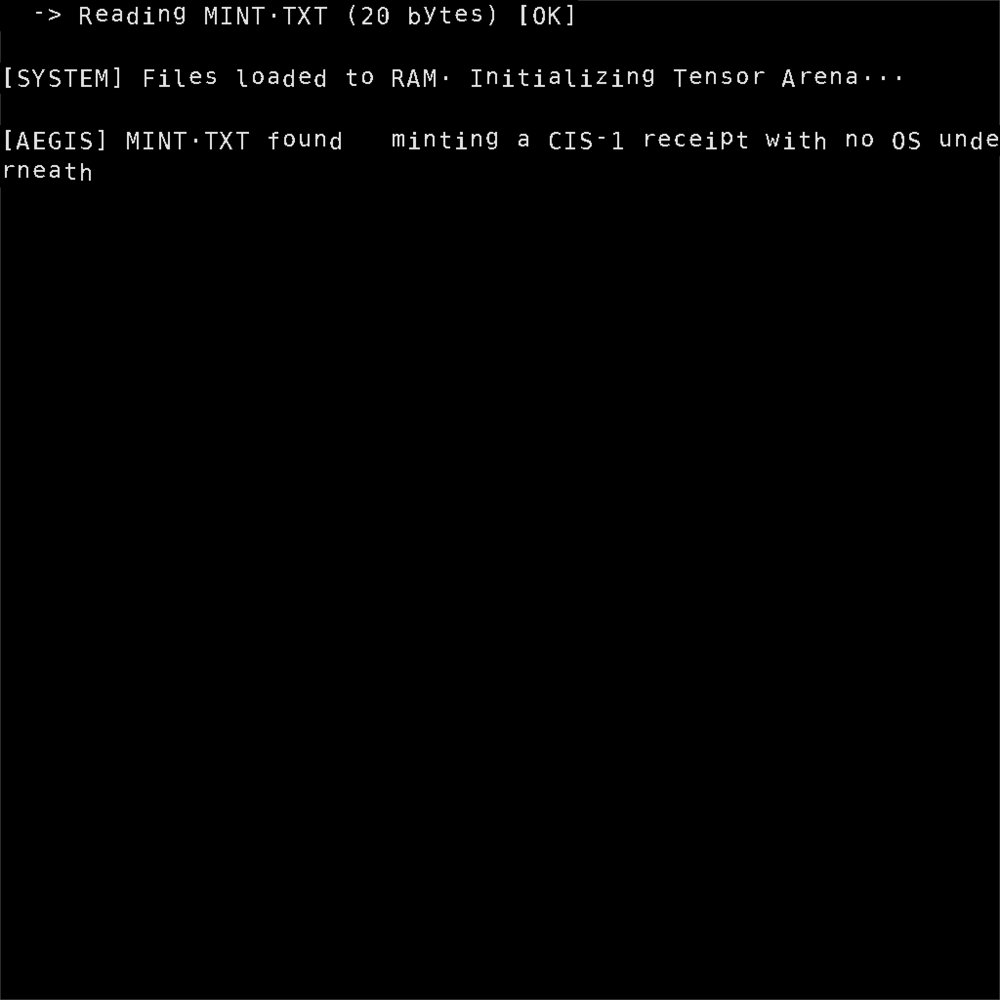

ALICE boots a language model with no operating system underneath, decodes with integer-exact semantics that reproduce bit for bit on any CPU, and hands you a receipt the machine's own TPM has signed over the firmware, the engine binary, the model bytes and the transcript. Today the receipt was minted on screen, verified on a second boot, and checked again on a Linux host with OpenSSL.
Values are from labs/logs/dashboard/mint/ATTEST.TXT and RECEIPT.TXT. PCR 4 is identical in the verify boot because the same binary ran; PCR 12 differs there by exactly one extra event, the receipt file itself.
EV_EFI_BOOT_SERVICES_APPLICATION over BOOTX64.EFI. Same binary, same PCR 4, in both boots.
00518abd1a378c155fad873aa14d280f8a2433fdd215abeb0e90d8b99991c3aaThree EV_IPL events: MODEL.SAF 2 797 632 B, EMBED.BIN 6 291 456 B, VOCAB.BIN 163 954 B, each with its SHA-256 in the event data.
b0b2eb6b5db2f200c5db9245c55dcdd6fc5d2c45d950e5dae82779a658e5ee8c64 greedy tokens from "Once upon a time" under CIS-1 FullInt. CIS digest 67e8c0a96abc04e1; SHA-256 chain over every token id and every full integer logit vector:
aee25b770bd7b22eea2ea8476bbd949881d58a98d6dc3085c7cc94d322b1961bECC P-256 attestation key, owner hierarchy. extraData = SHA-256 of the receipt bytes. First quote returned TPM_RC_RETRY and was resent (retry 1), a behaviour the EFI protocol does not hide.
528e205e04882437269fb1fbc6181ba0f2f6fddc120ba25f93c0e5bf233fbaafattest_verify.py: PCR 12 and 13 replayed from the event log equal the values read back; pcrDigest matches; signature verifies with OpenSSL; a tampered attest is rejected. cis_witness verify: the receipt replays bit for bit against the artifacts.
GOP framebuffer, 1920x1440, drawn by 300 lines of no_std Rust. Every panel value is read from CPUID, file bytes, SHA-256s and TPM PCRs. The token stream is a display-only observer that runs after the chain fold, which is why the minted receipt is byte-identical to the golden fixture.




CIS-1 pins integer semantics, so a decode is a number, not an impression. The BitNet-2B digest below was reproduced in this sprint from independently re-derived artifacts (different file bytes, same values) on AVX-512/VNNI-class silicon, and again with 1, 2 and 4 worker threads.
| Where | ISA path | 2B decode digest |
|---|---|---|
| Intel i5-10210U (crosvm) | AVX2 | cab11400d737ac4a |
| GitHub aarch64 runner | NEON | cab11400d737ac4a |
| Celeron N4020 | scalar | cab11400d737ac4a |
| Dell i5-5200U, bare metal kit | AVX2 | cab11400d737ac4a |
| Sapphire Rapids class VM, this sprint | AVX2 · AVX-512 VNNI | cab11400d737ac4a |
CIS selftest digest 76985613c965f643 also matched (spec Tier-2 pin). Source: labs/LAB-02, labs/LAB-03.
| Threads | decode speed-up | digest, every repeat |
|---|---|---|
| 1 | 1.00x | cab11400d737ac4a |
| 2 | 1.51x | cab11400d737ac4a |
| 4 | 2.00x | cab11400d737ac4a |
Row-parallel integer dispatch is bit-identical by construction: rows are independent integer dot products. Ratios from same-process interleaved runs on the VM (env=vm); absolute tokens per second are in labs/LAB-05 and are not product numbers.
Median per-call ratio of the new AVX-512 VNNI kernel against the AVX2 incumbent, same process, interleaved, bit-identical outputs on every shape (labs/LAB-03). The amber tick is 1.00x. When weights stream from DRAM the integer decode already runs near this VM's single-core read bandwidth, so the remaining levers are cores and bytes per token, not instructions.
Negative result kept: a 4-row-blocked VNNI variant was slower than the 1-row kernel and stays behind a toggle. Bar scale: full track = 1.5x.
60 pre-registered items through the unchanged agent_trace suite (labs/LAB-07). Bars show the correct-argument rate per bucket; whiskers are the Wilson 95% interval from score.py. Every one of the 60 trace receipts verified, including the misses: the receipt records what the model did, right or wrong.
Call rate 50/58 (86.2%), correct tool 49/58 (84.5%). Hard and overflow arithmetic fail mostly by not calling the tool at all; when the 2B does call, the argument is right. Distractor set (n=2) is too small to grade no-tool precision. Receipt verify 60/60.
Research sweep on ternary pretraining, distillation, tool-use training and calibrated abstention; then a design panel and a training/distillation plan with provenance, eval gates and air-gapped vs connected variants. Lands in model/.
Every first-of-kind claim from the briefs gets a prior-art hunt and a repo-evidence check before it is listed. Lands as NOBODY-HAS-DONE-THIS.md.
GOP panels, live token stream, attestation view, receipt summary; receipts unchanged (byte-identical to golden). labs/LAB-06.
Mint and verify boots under QEMU + swtpm, TPM2_Quote over PCR 4/12/13, host verification with OpenSSL. labs/LAB-04, LAB-06.
Dell / HP / Acer kit with their discrete or firmware TPMs; EK-certified attestation key; Secure Boot on with a signed .efi.
DoW SBIR Release 6 opens 2026-10-21; NSF 26-510 due 2026-11-04. The lab logs are the evidence package.